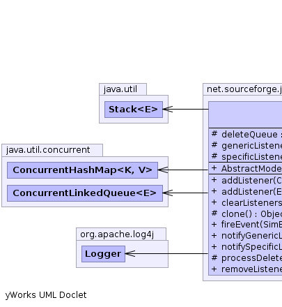
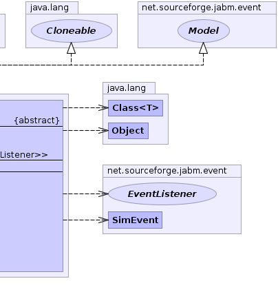

net.sourceforge.jabm.event
Class AbstractModel
java.lang.Object
 net.sourceforge.jabm.event.AbstractModel
net.sourceforge.jabm.event.AbstractModel
- All Implemented Interfaces:
- java.io.Serializable, java.lang.Cloneable, Model
- Direct Known Subclasses:
- AbstractReportVariables, CombiSeriesReportVariables, SeriesReportVariables, SimulationController
public abstract class AbstractModel
- extends java.lang.Object
- implements java.lang.Cloneable, java.io.Serializable, Model
- See Also:
- Serialized Form
-
-
|  |
 |
 |
|
Field Summary |
protected java.util.Stack<EventListener> |
deleteQueue
|
protected java.util.concurrent.ConcurrentLinkedQueue<EventListener> |
genericListeners
EventListeners that subscribe to all classes of events. |
protected java.util.concurrent.ConcurrentHashMap<java.lang.Class,java.util.concurrent.ConcurrentLinkedQueue<EventListener>> |
specificListeners
A map of EventListeners that subscribe to a specific class of events,
keyed on the class of the event. |
| Methods inherited from class java.lang.Object |
equals, finalize, getClass, hashCode, notify, notifyAll, toString, wait, wait, wait |
genericListeners
protected java.util.concurrent.ConcurrentLinkedQueue<EventListener> genericListeners
- EventListeners that subscribe to all classes of events.
specificListeners
protected java.util.concurrent.ConcurrentHashMap<java.lang.Class,java.util.concurrent.ConcurrentLinkedQueue<EventListener>> specificListeners
- A map of EventListeners that subscribe to a specific class of events,
keyed on the class of the event.
deleteQueue
protected java.util.Stack<EventListener> deleteQueue
AbstractModel
public AbstractModel()
removeListener
public void removeListener(EventListener listener)
- Specified by:
removeListener in interface Model
addListener
public void addListener(EventListener listener)
- Specified by:
addListener in interface Model
addListener
public void addListener(java.lang.Class eventClass,
EventListener listener)
- Specified by:
addListener in interface Model
fireEvent
public void fireEvent(SimEvent event)
processDeleteQueue
protected void processDeleteQueue()
notifySpecificListeners
public void notifySpecificListeners(SimEvent event)
notifyGenericListeners
public void notifyGenericListeners(SimEvent event)
clearListeners
public void clearListeners()
clone
protected java.lang.Object clone()
throws java.lang.CloneNotSupportedException
- Overrides:
clone in class java.lang.Object
- Throws:
java.lang.CloneNotSupportedException